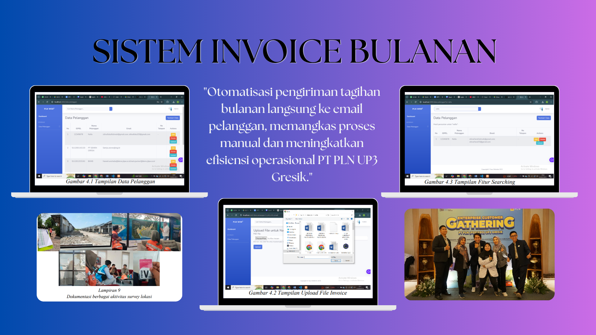
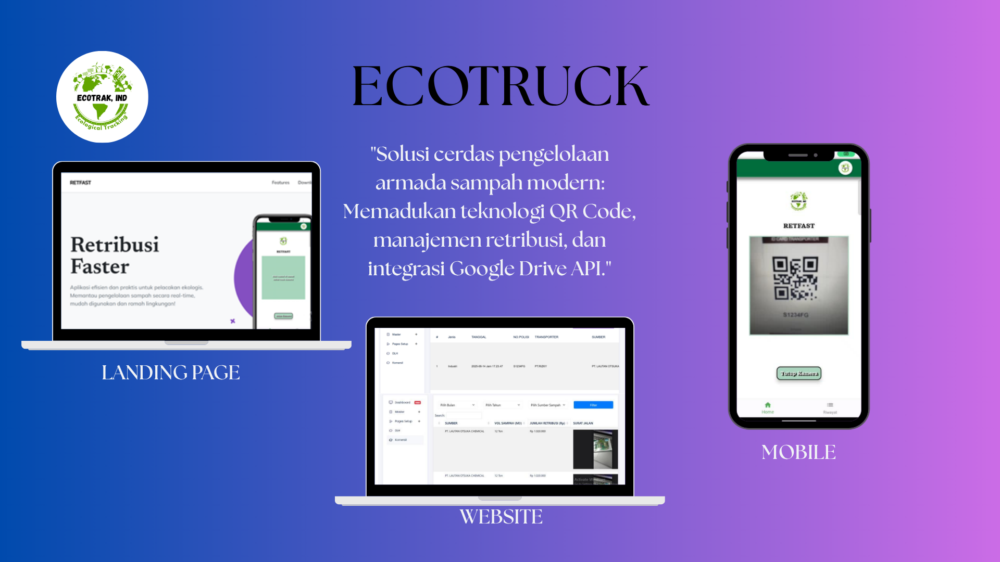
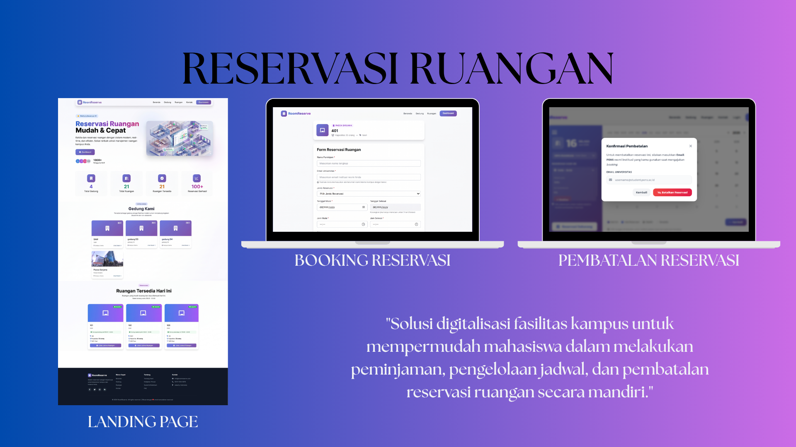
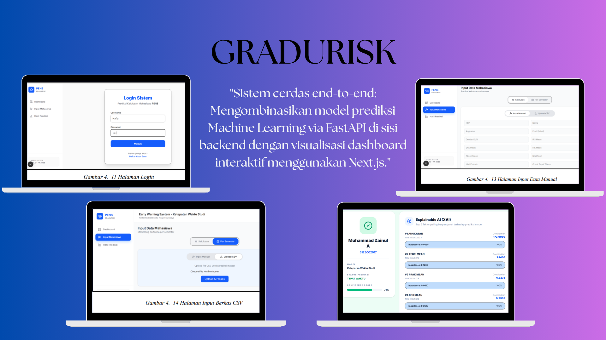

×

Membangun solusi digital end-to-end dan mengubah data menjadi wawasan strategis dengan Node.js, Express.js, Next.js, Laravel, Python, & SQL.
Seorang Full Stack Developer dan Junior Data Analyst dengan latar belakang pendidikan D4 Teknik Informatika dan D3 Teknik Informatika dari Politeknik Elektronika Negeri Surabaya (PENS).
Saya menguasai pengembangan web full stack dengan Node.js (Express.js), Next.js, dan Laravel untuk membangun aplikasi modern yang scalable. Di sisi frontend, saya menggunakan JavaScript (Vanilla), EJS, Next.js, dan Bootstrap untuk menciptakan antarmuka yang responsif dan interaktif. Untuk database, saya biasanya menggunakan MySQL.
Di sisi data analytics, saya memiliki spesialisasi dalam mengubah data mentah menjadi wawasan strategis menggunakan Python (Pandas, Scikit-learn) serta SQL. Saya terbiasa menggunakan Google Colab untuk eksperimen data, Matplotlib dan Seaborn untuk visualisasi, serta FastAPI untuk membangun API berbasis data yang terintegrasi dengan Next.js di sisi frontend.
Saya juga terbiasa menggunakan Git, GitHub, dan Microsoft Excel untuk mendukung pengembangan dan analisis. Kombinasi antara kemampuan Full Stack dan Data Analytics memberikan perspektif unik dalam memahami integritas dan struktur data langsung dari sumbernya.
Politeknik Elektronika Negeri Surabaya
2025 - SekarangPoliteknik Elektronika Negeri Surabaya
2022 - 2025Klik gambar untuk melihat detail visual dan video demo proyek

Lihat Detail GambarOtomatisasi pengiriman invoice via email untuk PT PLN UP3 Gresik.

Lihat Gambar & VideoHak Cipta Terdaftar. Pengelolaan armada sampah dengan QR Code & Google Drive API.

Lihat Detail GambarSistem reservasi ruangan berbasis web untuk digitalisasi fasilitas kampus.

Lihat Gambar & VideoPrediksi ketepatan waktu studi mahasiswa dengan 7.435 data menggunakan Random Forest.
Klik tombol untuk melihat dokumen sertifikat secara langsung tanpa pindah halaman
Lembaga Sertifikasi Profesi PENS
2024Sertifikasi kompetensi pengembangan web tingkat nasional yang diakui Badan Nasional Sertifikasi Profesi.
PT PLN (Persero) UP3 Gresik
2024Sertifikat penyelesaian program magang sebagai Full-Stack Developer di unit pelayanan pelanggan PLN.
EcoTruck - Aplikasi Pengelolaan Armada Sampah
2025Hak Cipta dengan nomor registrasi EC002025082983 untuk sistem manajemen armada sampah berbasis web.
PENS Language Center
2025Tes Kemahiran Bahasa Inggris dengan skor 457 (setara TOEFL). Mengukur kemampuan listening, structure, dan reading comprehension.